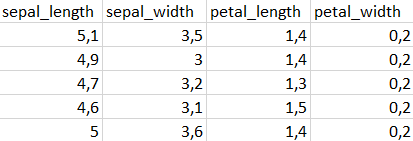
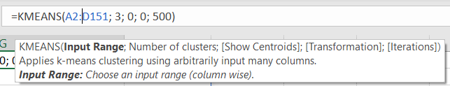
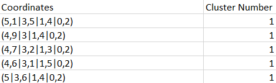

K-Means Clustering
As the name suggests, clustering algorithms attempt to divide data points into a given number of clusters based on their coordinates. RIVALYTICS supports one such algorithm called "K-Means clustering". K-Means Clustering can only be applied to numeric data.
Example
The Iris flower data set might be the best-known public data set. It contains measurements of the length and width of three subspecies of the Iris flower. Those are called Setosa, Virginica and Versicolor.
For each subspecies, the data contains 50 data points with four measurements each.
As seen in Figure 1 below, the attributes are sepal length, sepal width, petal length, petal width.
We now want to find clusters of data points to then classify the data points into three different species.

Figure 1: First entries of the Iris flower data set
We will try to divide the data into three clusters using the K Means Clustering algorithm.
For this, we specify the data range as A2:D151, as this is the range of Excel cells, in which the measurements lie in.
As we would want the algorithm to tell us the species solely based on the data measurements, we set the number of clusters to three.
For simplicity, we can leave out the centroids by entering a 0.
Transformations are especially useful when the absolute variation in coordinates differs greatly between attributes.
For us, this is not the case and we can enter another 0.
As for the number of steps, the default is set to 50, which should be sufficient for most cases.
Nonetheless, if the amount of data is little, choosing more steps will not noticeably slow down the calculation.
Therefore, the number of steps is set to 500.
The filled-in settings can be seen in Figure 2.

Figure 2: K Means Clustering settings
After executing the function, a new table will be pasted containing the (possibly scaled) coordinates and their computed cluster (Figure 3).

Figure 3: First entries from the K Means Clustering result
Luckily, the Iris data set also provides information on the actual species of each measurement. This gives us the chance to check the accuracy of the algorithm for the underlying data set and clustering settings. 134 of 150 data points were classified correctly, which corresponds to an accuracy of about 89.3%.
Settings
To apply the clustering to your data, the KMEANS function requires two compulsory and three optional parameters.
The compulsory parameters consist of:
Input rangespecifies the range of Excel cells, that your data uses. Note, that the header (top row containing the column names) should not be included.Number of clustersis the number of clusters, that you expect.
Each cluster has a centroid, which can be thought of as the center of mass of the data points assigned to the respective cluster.
To prevent data attributes with big absolute values overweighing other attributes, applying a transformation to preprocess the data might make sense.
Transformation- 0 will perform the algorithm on the raw data
- 1 will apply the gaussian normalization by subtracting the data by its mean and diving it by the standard deviation.
- 2 will apply the min-max normalization by subtracting the data by its minimum value and diving it by the min-max spread.
Iterationsspecifies the number of steps, that will be performed, the default is 50. For larger data sets, usually more steps are required, however, the runtime might noticeably increase.